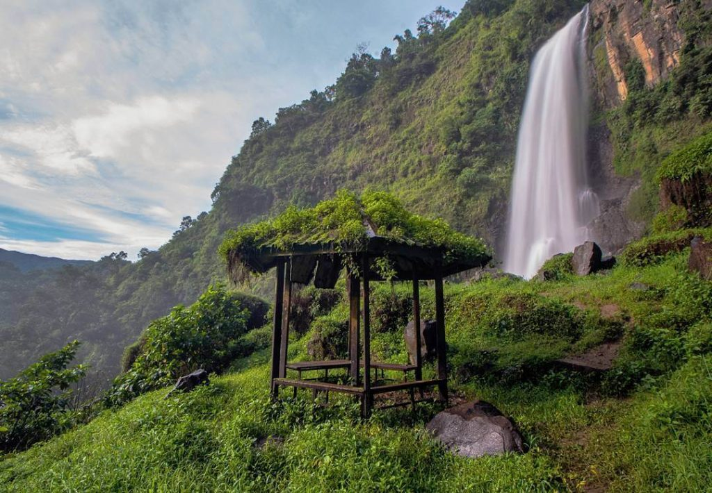
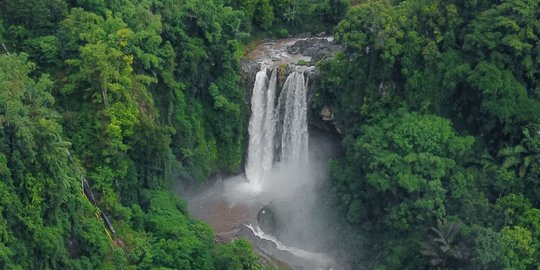

-

Malino
Malino, sebuah destinasi wisata di Sulawesi Selatan, Indonesia, terkenal karena keindahan pegunungan, udara segar, dan iklim sejuknya sepanjang tahun. Kota ini adalah tempat yang ideal untuk liburan santai, trekking, dan berbagai kegiatan luar ruangan. Malino juga menawarkan pesona alam yang menakjubkan, seperti air terjun dan kebun bunga yang indah. Ajaklah diri Anda ke Malino untuk menikmati ketenangan dan kecantikan alam yang memikat.
Explore → -

Air Terjun Bantimurung
Air Terjun Bantimurung adalah daya tarik alam yang menawan di Maros, Sulawesi Selatan, Indonesia. Terkenal sebagai "Surga Kupu-kupu," air terjun ini dikelilingi oleh hutan tropis dan merupakan rumah bagi berbagai spesies kupu-kupu yang cantik. Ajaklah diri Anda ke Air Terjun Bantimurung untuk mengeksplorasi keindahan alam yang menakjubkan dan merasakan kedamaian hutan tropis yang memukau.
Explore → -

Benteng Rotterdam
Benteng Rotterdam di Makassar, Sulawesi Selatan, adalah sebuah peninggalan bersejarah yang memikat. Benteng ini dibangun oleh Belanda pada abad ke-17 dan menawarkan pandangan sejarah yang mendalam tentang masa penjajahan. Berkunjung ke Benteng Rotterdam akan membawa Anda kembali ke masa lalu sambil menikmati arsitektur yang indah dan pemandangan laut yang menawan. Ajaklah diri Anda ke sini untuk merasakan sentuhan sejarah yang unik di kota Makassar.
Explore →